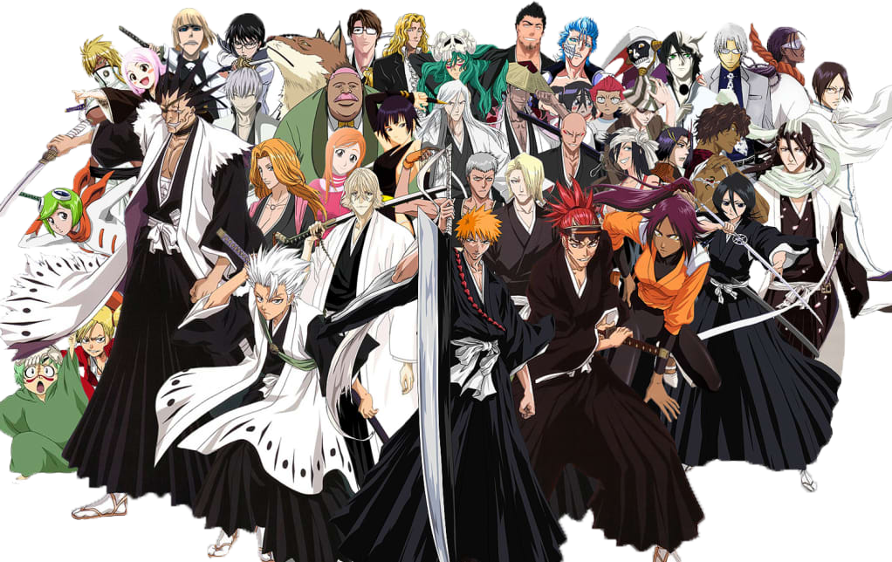

Основная информация
Чтобы включить музыку пролистните правый фрейм

Пятнадцатилетний подросток Ичиго Куросаки обладает несколько неприятной способностью — видеть призраков. Эта способность позволяет ему увидеть синигами Рукию Кучики, которая сталкивается с ним во время исполнения своих обязанностей. На дом Ичиго нападает пустой, Рукия пытается защитить жильцов, но пустой серьёзно ранит её, и потому она решает передать часть своих сил Ичиго, чтобы он смог одолеть пустого. На следующий день Рукия появляется в школе Ичиго как обычный человек. Она рассказывает парню, что потеряла свою силу и не сможет исполнять долг, пока её не восстановит. А Ичиго должен будет исполнять её обязанности по защите Каракуры и её жителей от атак пустых.
Духовная сила Ичиго как синигами оказывается удивительно большой, она привлекает голодных пустых и даже воздействует на находящихся поблизости людей, пробуждая в них сверхъестественные способности. Его силы также стали привлекать врагов другого типа — квинси, духовно могущественных людей, которые когда-то давно были почти целиком уничтожены синигами, а конкретно Урюу Исиду. Чтобы доказать преимущество квинси над синигами, он вызывает Ичиго на состязание по охоте на пустых. Но всё пошло плохо, приманка, использованная Урюу в начале состязания, оказалась более эффективной, чем предполагалось, вызвав легионы пустых. Пустые нападают на друзей Ичиго, Ясутору Садо и Орихиме Иноуэ, и они открывают в себе необычные способности. А Урюу и Ичиго объединяются и прогоняют пустых.
За оставшуюся часть семестра Ичиго, Рукия, Чад, Орихиме и Урюу становятся близкими друзьями. Рукия продолжает жить в уже привычном мире живых, однако она понимает, что рано или поздно придётся уйти. Проведя долгое время среди живых без разрешения, она стала разыскиваемым преступником. Начальство Рукии в Обществе душ отсылает двух элитных синигами, Ренджи Абарая и Бьякую Кучики, чтобы арестовать её. Ичиго и Урюу пытаются помешать им, но им это не удаётся. Но не только эта неудача настигла Ичиго — Бьякуя Кучики отнимает у него данную Рукией силу синигами. А Рукию забирают в Общество душ, где садят в камеру смертников.
Кисуке Урахара, загадочный владелец магазинчика, когда-то ушедший из Общества душ, решает помочь Ичиго вернуть духовную силу, чтобы он спас Рукию. Для это Ичиго приходится умереть и отыскать силу, скрытую в глубине его души, при этом чуть не став пустым. Он не просто успешно заканчивает тренировку и восстанавливает силу, а становится сильнее, чем был раньше. Урюу, Чад, Орихиме и Ичиго готовятся к проникновению в Общество душ под руководством говорящего кота по имени Йоруичи.